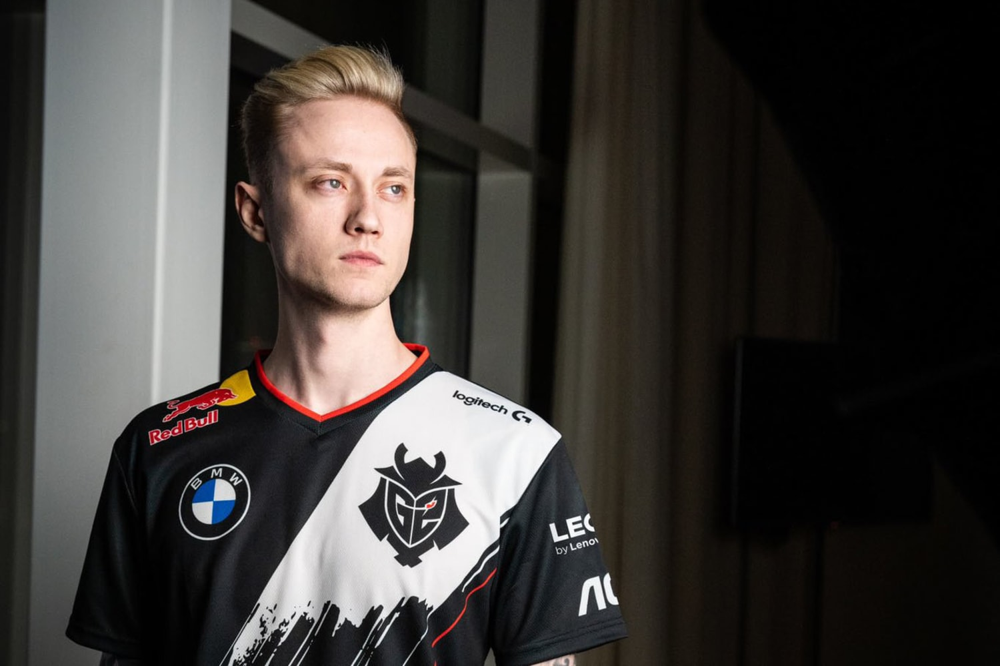

Rekkles officially joins G2 Esports for 2021 LEC season
BY GLORIA BORGER, DECEMBER 2 2021
The Swedish bot laner joins G2 after more than five years with Fnatic, transitioning to a G2 Esports lineup that
has been steady since coming together in 2018. Rekkles and the rest of Fnatic have been the biggest rivals of G2 Esports
in years, but now Rekkles and G2 will join forces and look to take home the Summoner's Cup at
the 2021 World Championship. Rekkles' in-game role is bot laner, also known as the ADC. He is playing one of the primary
carry roles, where his job is to dish out as much damage as possible. The bot laner usually plays marksmen champions,
who are mainly attack-damage champions that like to build raw attack damage, attack speed, and crit.
